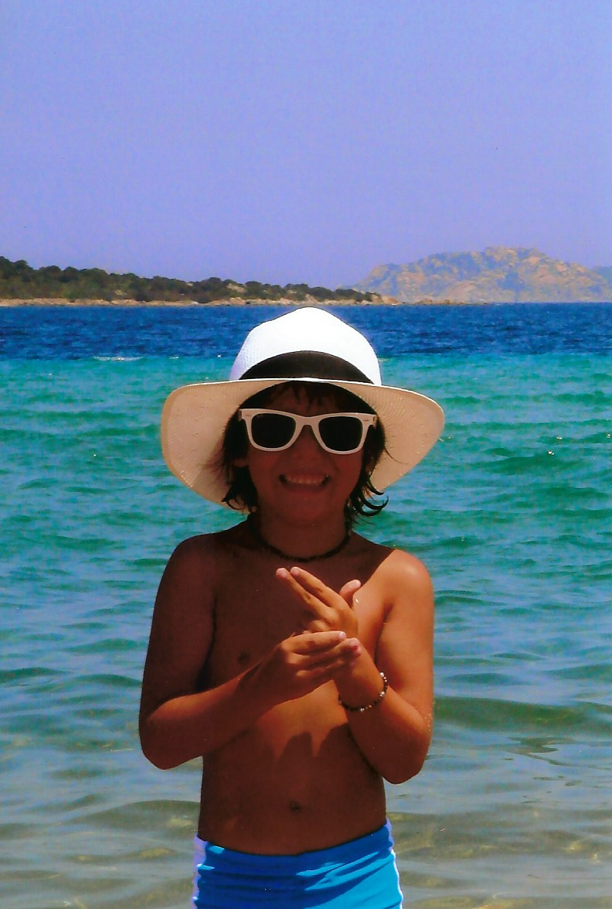

About me:
My name is Nicholas Sergio Williams, I just completed my first semester at Wake Tech Community College and plan to transfer to a four-year University after getting my Associates in Science. My end goal is a degree in a Computer Science field or Networking/Cybersecurity Field. I was born In Cary North Carolina, but lived in Italy for a good part of my childhood. My mother was born in Italy and my family lives and works in a coastal city called Genoa which is found in the northern province of Liguria. I now live in Apex North Carolina with my parents. I spend most my time with my golden retriever Beamer, I love bringing him to the lake and going on swims together. I also spend lots of my time playing soccer and hanging out with my friends. I love programming It’s one of my favorite things to learn, so please enjoy this website I made for my personal portfolio!
Contact Info:
Work Email-nswilliams5@my.waketech.edu
Personal Email- nicwill28@gmail.com
Phone Number- 919-917-5331